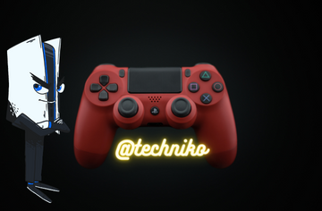

Sony PlayStation Series: Everything You Need to Know

3 Facts about the Sony PlayStation
The PlayStation 2 sold the most units with 159 million, a number that makes it the most popular console in gaming history.
Sony designed PlayStation consoles for backward compatibility. For example, most PS4 games will work on the PlayStation 5.
The PlayStation Network provides digital downloads of games for a monthly fee. This service provides access to older games in the PlayStation family.
Sony PlayStation 5 Specs
Internal Storage 825GB SSD
Controller Wireless DualSense
CPU 8-Core AMD Zen 2
GPU AMD RDNA 2
Disc Drive 4K Blu-Ray in Standard edition
The PS5 comes in two editions: standard and digital. The digital edition has no hardware for reading games discs and must interact with the PlayStation Network.
The PS5 is the most recent addition to the PlayStation family. Its major innovation is speed powered by a 3.5 GHz CPU and a 2.23 GHz graphics processor. Image: Shutterstock.
Sony PlayStation 5: Where to Buy It
Since the PS5 rolled out in November of 2020, units sell out quickly when restocked. Retailers like Wal-Mart, Target, and GameStop all carry the device when it is available.
Quick Facts
Original price
$299
Units Sold
102.4 million (for the original PlayStation)
Consumers can also purchase a PlayStation 5 through the PlayStation Direct service. Interested console shoppers can sign up to receive an invitation for a Direct restock event. Invited shoppers have the first opportunity to purchase. If there are still units in stock, PlayStation Direct will make them available to the general public.
You can also buy the Playstation 5 PS5 Disc Version Gaming Console on amazon.com by following this link.
The History of the Sony PlayStation
In the early 1990s, names like Nintendo and Sega dominated the game console market. At this time, the Sony Corporation was producing components for other game systems. When a planned partnership between Nintendo and Sony broke down, Sony started the Sony Computer Entertainment Division. This team would eventually develop the first PlayStation console.
The original PS brought several innovations to the market. The system used a CD-ROM drive instead of a cartridge system, giving the unit better 3D graphics and a lower manufacturing cost. The controller used a two-handed grip and incorporated the now-familiar PS buttons with a red circle, blue cross, green triangle, and pink square.
Early PS-exclusive games also helped the console gain a foothold in the home entertainment market. The popularity of Gran Turismo, Tekken, and Final Fantasy influenced the purchasing decisions of many consumers.
Since the first console, PS has grown to include portable devices like the PSP and PlayStation Vita. The company has also branched into digital game services like the PlayStation Network. The digital version of the PS5 relies solely on this digital content.
Sony PlayStation Versions: Understanding Each Model
Although the company has made forays into other devices, PlayStation is best known as a gaming console. Each generation has brought better performance and improved gaming quality.
The first PlayStation generation had a CD-ROM drive that could play audio CDs as well as games. Image: Shutterstock.
PS/PS1
The first PlayStation generation had a CD-ROM drive that could play audio CDs as well as games. It helped move the gaming world from two dimensions to more engaging 3D rendering.
PS2
The PS2, launched in 2000, is the current champion for most consoles sold. This unit had backward compatibility with the PS1, so gamers could still play their favorite games. It also used a CD/DVD drive and worked as a multimedia player.
PS3
Game consoles improved as technology moved forward. In 2006, the PS3 was the first console with internet connectivity and an internal hard drive. These features allowed it to work with the new PlayStation Network. Gamers could download older games and access beta versions through the PlayStation Plus service.
PS4
In 2013, Sony sought to introduce a console comparable to gaming PCs. The PS4 uses a 1.6GHz CPU and an AMD Radeon GPU to deliver fast, immersive gameplay. Recognizing the growing social popularity of gaming, the PS4 controller includes a Share button for uploading gameplay clips.
PS5
The PS5 is the most recent addition to the family. Its major innovation is speed powered by a 3.5 GHz CPU and a 2.23 GHz graphics processor. It has backward compatibility with most PS4 games, and the standard model can play Blu-ray media.
The Public Response to the Sony PlayStation
The first PS was released at a pivotal time in the gaming industry. The move from two-dimensional side-scrolling games to 3D shooters and open worlds brought new possibilities for creative development. The PS console’s ability to play other media enhanced its reputation as a home entertainment device. As a result, the PS2 is the best-selling device in gaming console history, and orders for the PS5 through PlayStation Direct are frequently sold out.
Sony PlayStation Series: Everything You Need to Know FAQs (Frequently Asked Questions)
What is a PlayStation?
The PlayStation is a gaming console developed to compete with gaming systems from companies like Nintendo, Sega, and Microsoft.
What was the original release date of the Sony PlayStation?
The release date for the original PlayStation was December 3, 1994. The first release of the PS5 took place on November 12, 2020.
What was the original price of a PlayStation?
The price of a PS1 was $299 on its release date in 1994.
Who invented the Sony PlayStation?
Although developed by a skilled team, credit for the invention of the PlayStation goes to Sony executive Ken Kutaragi. His work with a hardware engineering division led to the first console.
How much is a PlayStation 5?
The standard PS5 with a disc drive retails at $499. The digital-only version is less expensive at $399.
PlayStation Plus is a subscription service run through the PlayStation Network. Subscribers can receive special offers as well as access to early releases and beta versions of upcoming releases.